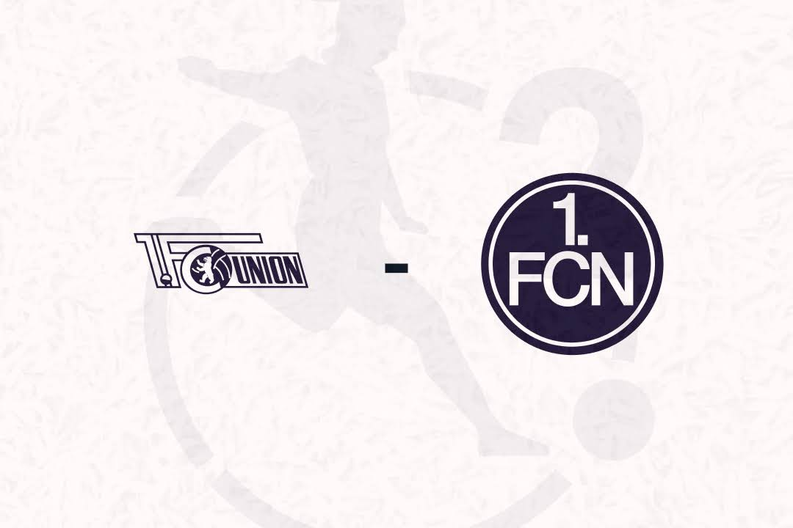

Union Berlin holt im direkten Verfolgerduell drei Punkte und kommt bis auf einen Punkt an den Club heran, der in Berlin erstmals seit September wieder verliert.
Bei Wintertemperaturen mussten die 5494 anwesenden Zuschauer einige Minuten warten, bis sich etwas im Spiel tat. Bevor es zur ersten richtigen Torchance kam, schockte die Verletzung von Neuzugang Leonie Köster die Eisernen, die nach einem Zweikampf vom Platz getragen werden musste (13.). Der Schock hielt aber nicht lange an, denn schon eine Minute später nutzte Kapitänin Lisa Heiseler ein Missverständnis in der Nürnberger Hintermannschaft aus. Torhüterin Etzold und Verteidigerin Thöle gingen beide nicht zum Ball, den Heiseler sich dankend schnappte und nur aus spitzem Winkel ins leere Tor schieben musste (14.).
Der weitere Verlauf des Spiels spielte sich größtenteils im Mittelfeld ab. Bis auf einen Kopfball von Desic, der genau auf Unions Torhüterin Bösl flog, tat sich lange nichts auf beiden Seiten (32.). Erst in der 37. Minute gab es die nächste hochkarätige Chance: Moraitou bediente Stürmerin Desic, die weit hinter der Unioner Defensive stand, fälschlicherweise mit einem Rückpass. Die zweitbeste Torschützin der Cluberer scheiterte im Eins-gegen-eins aber an der stark haltenden Bösl.
Die zweite Hälfte begann mit einer Druckphase der Hausherinnen. Besonders Naika Reissner drehte richtig auf und kam binnen einer Minute zweimal gefährlich vor das Tor: In der 51. Minute setzte sie sich im Dribbling gegen drei Gegenspielerinnen durch, wodurch sie in den Fünfer ziehen konnte. Der folgende Querpass wurde geklärt, bevor Heiseler an den Ball kam. Nur wenige Sekunden später endete der nächste Versuch Reissners erfolgreicher, als ihr Schuss von der Strafraumgrenze vom Arm der FCN-Kapitänin Guttenberger geblockt wurde. Den folgerichtigen Elfmeter verwandelte Orschmann platziert in die rechte Ecke (53.).
Ab dort schienen die Gäste komplett von der Rolle und kassierten nach einer Ecke in der 61. Minute den dritten Gegentreffer durch einen Kopfball von Markou. Die beflügelten Unioninnern ließen auch danach nicht locker und das Spiel verlief ausschließlich in eine Richtung. Abermals waren alle Augen auf Reissner gerichtet, die kurz vor dem Fünf-Meter-Raum von Etzolds ausgestrecktem Arm zu Fall gebracht wurde und Schiedsrichterin Celina Böhm zum bereits zweiten Mal auf den Punkt zeigte (63.). Diesmal nahm sich Steinert der Aufgabe an, die sich für dieselbe Ecke wie Orschmann entschied. Auch diesmal entschied sich Etzold für die gleiche Ecke und parierte den gut geschossenen Schuss. Der Nachschuss von Heiseler ging weit über das Tor hinaus.
Die Nürnbergerinnen setzten sich dem nachlassenden Druck weiterhin tapfer entgegen, kamen selber aber in der gesamten Halbzeit zu keiner gefährlichen Szene. Den Abschluss machte die Eingewechselte Halverkamps mit einem Schuss von Linksaußen, der gezielt ins Lattenkreuz zum 4:0 Endstand einschlug (90.).